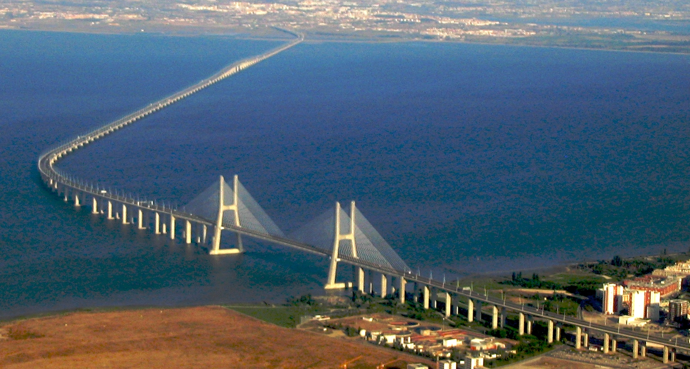

Most Krymski
Most Krymski, most Kerczeński, most nad Cieśniną Kerczeńską, most przez Cieśninę Kerczeńską – most łączący okupowany przez Rosję Półwysep Krymski z
Półwyspem Tamańskim poprzez Cieśninę Kerczeńską.
Most jest częścią nowego odcinka linii kolejowej Bagierowo–Wyszestieblijewska. Połączenie kolejowe do mostu z Półwyspu Tamańskiego rozpoczyna się od stacji Wyszestieblijewska na
północnokaukaskiej linii kolejowej. Łączna długość nowej linii wynosi 62,74 km, w tym główna trasa: 56,04 km, tory na stacjach: 6,7 km, oraz 16 rozjazdów.
Połączenie drogowe do mostu po wschodniej stronie bierze początek od trasy M-25 Noworosyjsk–Cieśnina Kerczeńska, a kończy się w rejonie Tuzły na skrzyżowaniu z korytarzem transportowym.
Długość połączenia wynosi 40 km. Droga obejmuje cztery pasy ruchu o prędkości projektowej 120 km/h. Potencjalne natężenie ruchu przewidziane na rok 2034 w obu kierunkach wynosi nie mniej niż 36 000
samochodów dziennie.
 Po stronie zachodniej połączenie drogowe z mostem bierze początek od trasy A-150 „Tauryda” Kercz–Sewastopol i kończy się w rejonie twierdzy Kercz, na połączeniu z korytarzem transportowym.
Długość połączenia wynosi 22 km. Droga obejmuje cztery pasy ruchu o prędkości projektowej 140 km/h. Trasa „Tauryda” w wersji dwupasmowej powinna być oddana do użytku w 2018, a na 2020 przewiduje się
uruchomienie dwóch kolejnych pasów
Dane techniczne dotyczące połączenia kolejowego:
długość obiektu wynosi 40 km
całkowita długość nowych linii kolejowych wynosi 120 km, w tym 80 km głównej drogi, 22 km torów na stacjach kolejowych.
Ponadto w fazie projektowania znajduje się infrastruktura kolejowa ze stacji Portowa i Tamań Pasażerski do mostu.
Budowa i modernizacja połączenia kolejowego po stronie kontynentalnej są w znacznej mierze związane z budową suchego portu w Tamaniu.
Od bocznicy prowadzącej od portu do mostu będzie potrzebnych tylko 6 km linii kolejowych.
Po stronie zachodniej połączenie drogowe z mostem bierze początek od trasy A-150 „Tauryda” Kercz–Sewastopol i kończy się w rejonie twierdzy Kercz, na połączeniu z korytarzem transportowym.
Długość połączenia wynosi 22 km. Droga obejmuje cztery pasy ruchu o prędkości projektowej 140 km/h. Trasa „Tauryda” w wersji dwupasmowej powinna być oddana do użytku w 2018, a na 2020 przewiduje się
uruchomienie dwóch kolejnych pasów
Dane techniczne dotyczące połączenia kolejowego:
długość obiektu wynosi 40 km
całkowita długość nowych linii kolejowych wynosi 120 km, w tym 80 km głównej drogi, 22 km torów na stacjach kolejowych.
Ponadto w fazie projektowania znajduje się infrastruktura kolejowa ze stacji Portowa i Tamań Pasażerski do mostu.
Budowa i modernizacja połączenia kolejowego po stronie kontynentalnej są w znacznej mierze związane z budową suchego portu w Tamaniu.
Od bocznicy prowadzącej od portu do mostu będzie potrzebnych tylko 6 km linii kolejowych.
Most Vasco da Gamy
Most Vasco da Gamy (port. Ponte Vasco da Gama) – most w Europie, który spina brzeg rzeki Tag w okolicach stolicy Portugalii, Lizbony (w miejscowości Sacavém) z miejscowością Montijo po drugiej stronie rzeki. Jego długość wynosi 17,2 km, w tym 0,829 km to przęsło główne, 11,5 km pozostałe przęsła nurtowe oraz 4,8 km to wiadukty dojazdowe i węzły.  Most został zbudowany w celu odciążenia ruchu na jedynej działającej wcześniej przeprawie (Most 25 Kwietnia, port. Ponte 25 de Abril) łączącej Lizbonę z terenami po drugiej stronie Tagu oraz z autostradami. Most został otwarty dla ruchu samochodowego 29 marca 1998, w czasie odbywających się międzynarodowych targów Expo ’98. Budowlę nazwano imieniem żeglarza Vasco da Gamy w pięćsetną rocznicę odkrycia przez niego drogi morskiej z Europy do Indii. Most składa się z sześciu pasów ruchu, na których obowiązuje ograniczenie prędkości, tak jak na autostradzie do 120 km/h, wyjątkiem jest jedna sekcja gdzie ograniczenie prędkości wynosi 100 km/h. W deszczowe, wietrzne lub mgliste dni prędkość na moście ograniczona jest do 90 km/h. W przypadku, gdy ruch samochodowy wzrośnie do 52 tys. samochodów na dobę liczba pasów ruchu może być rozbudowana do ośmiu. Sekcje mostu
- Północny wjazd – 945 m; połączenie z autostradą A12
- Wiadukt północny – 488 m; 11 sekcji
- Wiadukt „Expo” – 672 m; 12 sekcji
- przęsło główne – rozpiętość pomiędzy pylonami: 420 m; zasięg z każdej strony pylonu: 203 m (łączna długość: 829 m); wysokość pylonów: 150 m; wysokość skrajni żeglownej: 45 m;
- Wiadukt centralny – 6531 m; 80 prefabrykowanych 78 metrowych sekcji; 81 żelbetonowych pali o długości od 45 do 95 m; wysokość od 14 do 30 m
- Wiadukt południowy – 3825 m; 84 prefabrykowanych 45 metrowych sekcji; 85 żelbetonowych pali
- Południowy wjazd – 3895 m; połączenie z autostradą A1